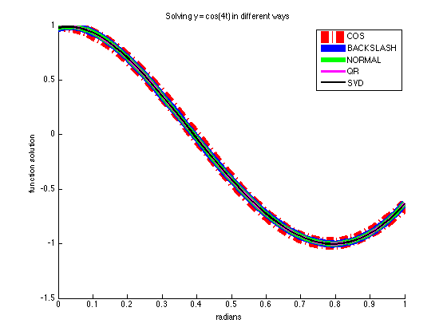
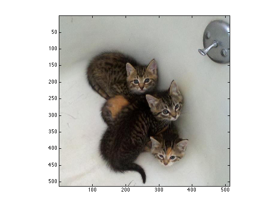
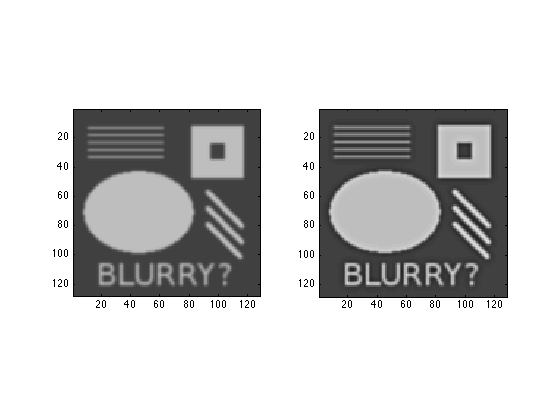
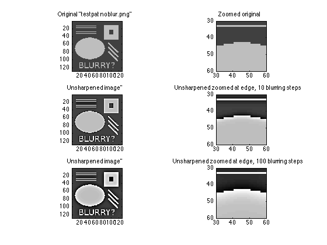
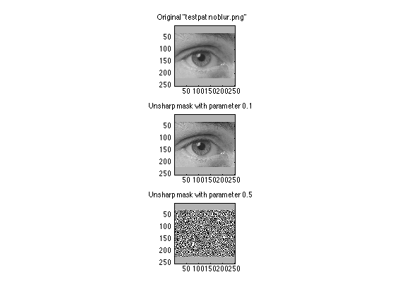
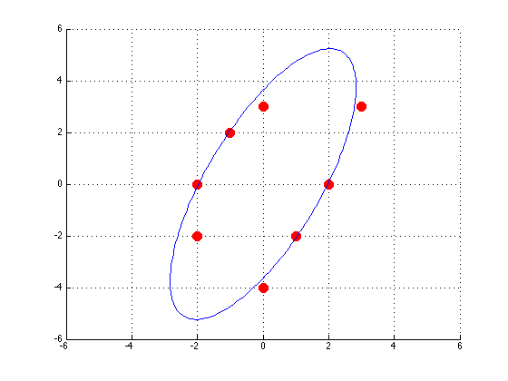
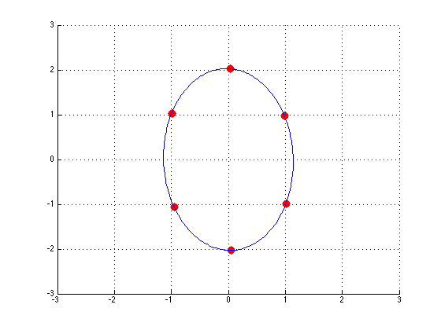

SciComp Homework 3
By Thomas M Aarholt, 15th November 2012
Contents
Problem 1
Hello World git! Here follows the git shortlog:
type('gitlog.txt')
%% --------------------------------------------------------
Thomas Aarholt (12):
Started solving Problem 2
Almost finished P2, toyed with P4
Improved p2 on HW3
fixed an error
Solved problem 4 (partially)!!
Ellipsis and image working!
More updates to ellipse
cleaned up
Fixed a bug with git
got rid of some git code in my files (?)
Massive improvement on Problem 4 and 5!
ALL GOOD! Just waiting for gitlog now!
%% --------------------------------------------------------
Problem 2
I create a 0-1 matrix with 50 columns, turn it into a vandermonde matrix where all the values previously in the columns 1-50 now are in column 2, rows 1-50, with the rest of the columns formatted according to the vandermonde matrix.
m = 50; n = 5; t = linspace(0,1,m)'; % Creating t, the 0-1 vector with m spaces. A = fliplr(vander(t)); % Creating a vandermonde matrix % (the right way around with fliplr) A = A(:,1:n); % Removing the entries after the fifth row b = cos(4*t); % The "real" cos(4*t)
figure(1); hold on COS = plot(t,b,'r-.'); % What does cos(4t) look like? set(COS,'LineWidth',15); xx(:,1) = A\b; % Solving by Matlab's backslash command BACKS = plot(t,A*xx(:,1),'b'); set(BACKS,'LineWidth',9); xx(:,2) = (A'*A)\(A'*b); % Finding the normal equations by % multiplying with the transpose of A NORMAL = plot(t,A*xx(:,2),'g'); set(NORMAL,'LineWidth',6); [Q,R] = qr(A); % Finding the solution by QR factorisation: xx(:,3) = R\Q'*b; QR = plot(t,A*xx(:,3),'m'); set(QR,'LineWidth',3) [U,S,V] = svd(A,0); % Finding the solution by svd: G = U * S * V'; xx(:,4) = (G'*G)\(G'*b); SVD = plot(t,A*xx(:,4),'black'); set(SVD,'LineWidth',2) legend('COS','BACKSLASH','NORMAL','QR','SVD') title('Solving y = cos(4t) in different ways') xlabel('radians'); ylabel('function solution') hold off
Norms:
for c = 1:4 N(c) = norm(A*xx(:,c)-b,2); end
Table of solutions of x and 2-norms:
normtable(xx,N)
================================================================================
Backslash Normal equation QR SVD
================================================================================
x +0.977651051050956 +0.787296437030590 -13.726690028111138 +14.993014653596203
-3.665759654743957 +0.977651051050360 +0.787296437042173 -13.726690028160782
+14.993014653670262 -3.665759654779711 +0.977651051050948 +0.787296437030584
-13.726690028111079 +14.993014653596113 -3.665759654743917 +0.977651051050924
+0.787296437030878 -13.726690028111268 +14.993014653595205 -3.665759654743045
--------------------------------------------------------------------------------
2-norm +0.061356756239887 +0.061356756239888 +0.061356756239887 +0.061356756239888
================================================================================
Problem 3
I have literally no idea how to do this. Have one of the top rated pictures of all time on reddit.com/r/cats instead:
cats = imread('cats.jpg'); figure(2); imagesc(cats); axis equal, axis tight
Problem 4
PART 1
Starting with the unsharp mask
clear all type('readimg.m') u = readimg('testpat_blur2.png'); type('unsharpen.m') unsharp = unsharpen(u,10); % Apply image unsharp mask figure(3); clf; % Clears figure for new images (in case it contains cats) subplot(1,2,1), imagesc(u); type('greyimg.m') greyimg(); subplot(1,2,2), imagesc(unsharp); greyimg();
%% --------------------------------------------------------
%% readimg()
% Code reads a square greyscale image, passes it to u
function [u] = readimg(imgstring)
u = imread(imgstring);
u = double(u) / 255;
[n,n2] = size(u);
if (n ~= n2)
error('by default, this only supports square images')
end
end
%% --------------------------------------------------------
%% --------------------------------------------------------
%% unsharpen() function
% Code creates a blurry mask, subtracts it from image u to find the
% difference, then adds the difference to the image in order to sharpen it.
function [unsharp] = unsharpen(u,iterations)
[n,n2] = size(u);
e = ones(n,1);
L1 = spdiags([e -2*e e], [-1 0 1], n, n);
L1(1,1) = -1;
L1(end,end) = -1;
I = speye(n,n);
L = kron(L1, I) + kron(I, L1);
v = reshape(u, n*n, 1);
for i=1:iterations
v = v + 0.1*(L*v);
end
ublur = reshape(v, n, n);
%%
% This changes a blurring function to a unsharp mask.
edgemap = u - ublur;
unsharp = u + edgemap;
end
%% --------------------------------------------------------
%% --------------------------------------------------------
%% greyimg() function
% Code formats images with a colour axis from 0 to 1 (grey) and equal axis.
function [] = greyimg()
caxis([0 1])
colormap(gray)
axis equal, axis tight
end
%% --------------------------------------------------------
 Image becomes sharpened!
PART 2
What happens if we unsharpen a non-blurry image?
[u] = readimg('testpat_noblur.png'); % Read image from file unsharp = unsharpen(u,10); % Apply image unsharp mask figure(4); clf; % Clears figure for new images % Plots full size and zoomed versions of original image, 10 step blurring % and 100 step blurring. subplot(3,2,1), imagesc(u); greyimg(); title('Original "testpat noblur.png"') subplot(3,2,2), imagesc(u); greyimg(); axis([30 60 30 60]) title('Zoomed original') subplot(3,2,3), imagesc(unsharp); greyimg(); title('Unsharpened image"') subplot(3,2,4), imagesc(unsharp); greyimg(); axis([30 60 30 60]) title('Unsharpened zoomed at edge, 10 blurring steps') unsharp100 = unsharpen(u,100); subplot(3,2,5), imagesc(unsharp100); greyimg(); title('Unsharpened image"') subplot(3,2,6), imagesc(unsharp100); greyimg(); axis([30 60 30 60]) title('Unsharpened zoomed at edge, 100 blurring steps') hold off
The sharpening of the image enhances the contrast between points that are already contrasting. For a unblurred image, this ramps up the "whiteness" of the image to the point of making it "grainy", as can be seen on the zoomed plot of the 100 stepped blurring image.
PART 3
u = readimg('eye.png'); % Read image from file unsharp1 = unsharpendeg(u,10,0.1); % Apply image unsharp mask unsharp5 = unsharpendeg(u,10,0.5); % Apply image unsharp mask figure(5); clf; % Clears figure for new images % Plots full size and zoomed versions of original image, 10 step blurring % and 100 step blurring. subplot(3,1,1), imagesc(u); greyimg(); title('Original "testpat noblur.png"') subplot(3,1,2), imagesc(unsharp1); greyimg(); title('Unsharp mask with parameter 0.1') subplot(3,1,3), imagesc(unsharp5); greyimg(); title('Unsharp mask with parameter 0.5')
With the parameter set to 0.5, the image becomes a contrasty mess with no identifiable image.
Problem 5
For two vectors, xx and yy that are sets coordinates for plotting a ellipse around, we can use the following n x 3 matrix:
xx = []; yy = [];
A = [xx.^2, xx.*yy, yy.^2];
% What is the data we want to fit against?
xx = [3,1,0,-1,-2,0,-2,2]'
yy = [3,-2,3,2,-2,-4,0,0]'
xx =
3
1
0
-1
-2
0
-2
2
yy =
3
-2
3
2
-2
-4
0
0
Having a look:
figure(6); scatter(xx,yy,100,'r','filled') axis([-6,6,-6,6]) hold on grid on type('ellipse.m') [b,c,d] = ellipse(xx,yy) type('ellipseplot.m') ellipseplot(b,c,d);
%% --------------------------------------------------------
%% ellipse() function
% Takes a set of X and Y points and computes the b, c and d value for a
% ellipse of equation bx^2+cxy+dy^2 = 1!
function [b,c,d] = ellipse(x,y)
format long
A = [x.^2, x.*y, y.^2]
B = ones(length(x),1);
X = A\B;
b = X(1);
c = X(2);
d = X(3);
end
%% --------------------------------------------------------
A =
9 9 9
1 -2 4
0 0 9
1 -2 4
4 4 4
0 0 16
4 0 0
4 0 0
b =
0.257358001450461
c =
-0.200536979030043
d =
0.075581341521749
%% --------------------------------------------------------
%% ellipseplot() function
% Takes the b, c and d values for an ellipsis of equation bx^2+cxy+dy^2 =
% 1, and plots it!
function [] = ellipseplot (b,c,d)
ang = (1/2)*atan(c/(d-b));
e = sqrt((1-tan(ang)^2)/(b-d*(tan(ang)^2)));
f = sqrt((tan(ang)^2-1)/(b*(tan(ang))^2-d));
t = linspace(0,2*pi,200);
u = e*cos(t);
v = f*sin(t);
X = u*cos(-ang) - v*sin(-ang);
Y = u*sin(-ang) + v*cos(-ang);
plot(X,Y)
end
%% --------------------------------------------------------
 Now we create the points, and the program finds the best fitting ellipse!
figure(7); axis([-3 3 -3 3]), axis manual, hold on, grid on x = []; y = []; button = 1; disp('input points with mouse, button >= 2 for final point') while button == 1 [xx,yy,button] = ginput(1); x = [x; xx]; y = [y; yy]; plot(xx,yy,'.','color','red','MarkerSize',32) end [b,c,d] = ellipse(x,y); ellipseplot(b,c,d); clear
input points with mouse, button >= 2 for final point A = 0.001194546497059 0.070033955857387 4.105955678670360 0.977091252734183 -1.014491874848412 1.053324099722993 0.896817728131835 1.005154014067426 1.126577408433364 0.002341311134235 -0.098047538200340 4.105955678670360 1.032518210197712 -1.007215619694398 0.982533087103724 0.977091252734185 0.962466650497211 0.948060941828255